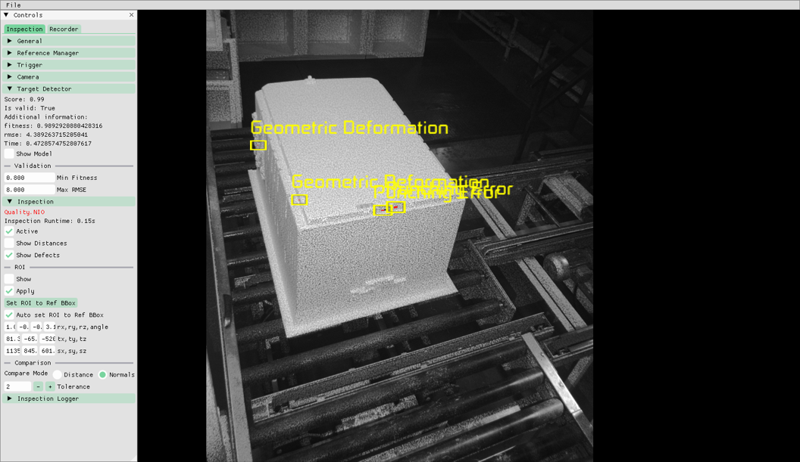
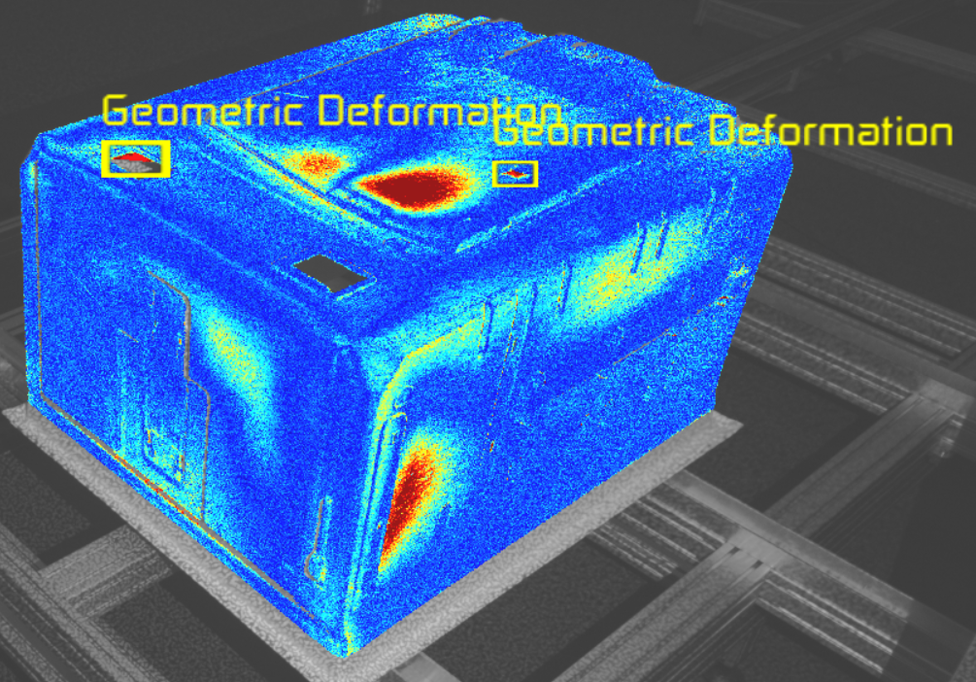
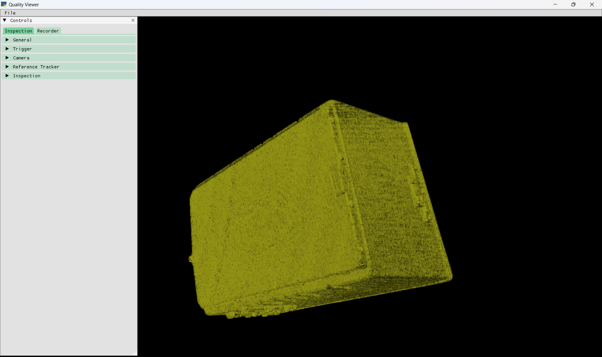
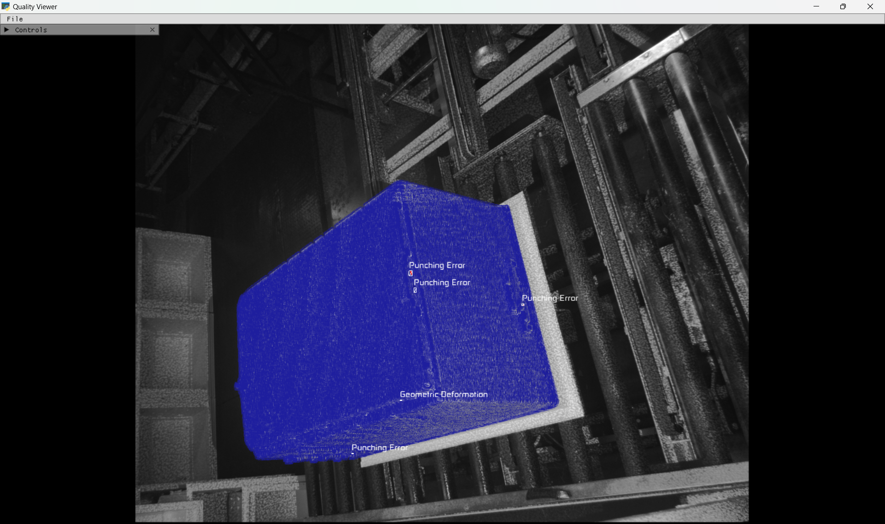
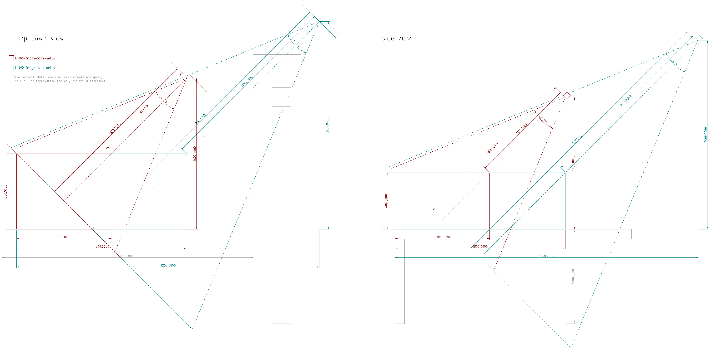
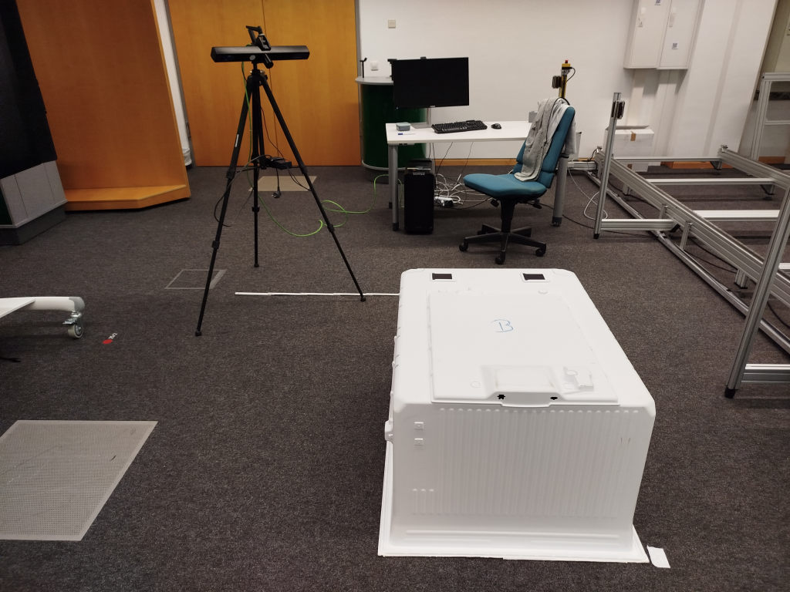
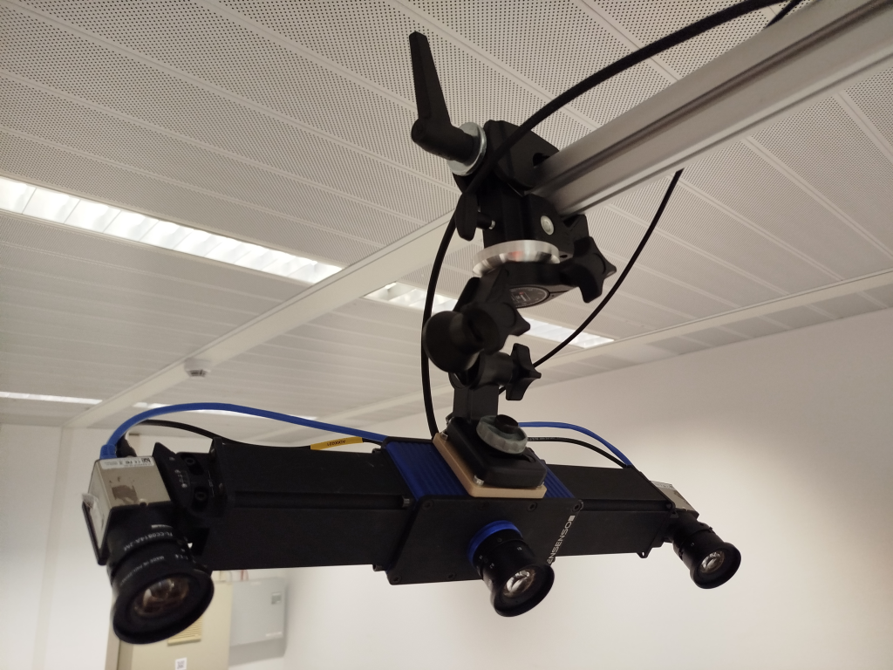
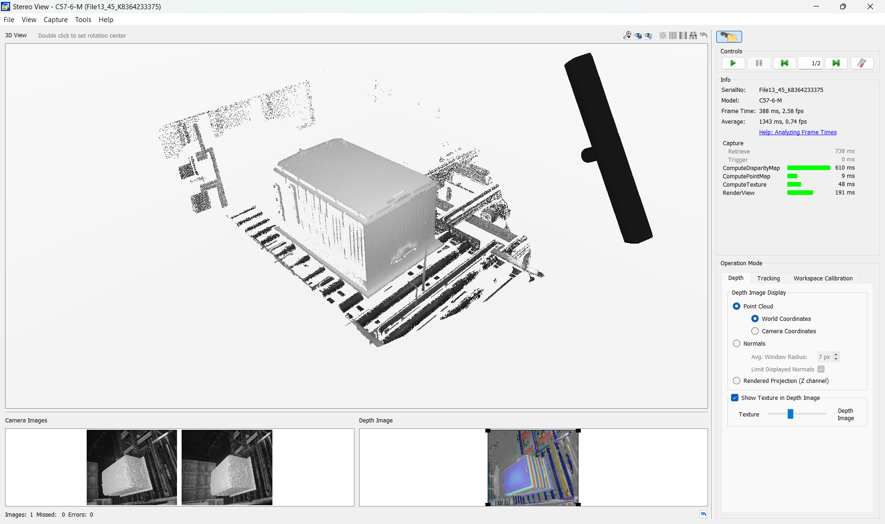

Plastic Molding Inspection
General Description
The app automatically monitor the quality of the production using 3D reconstruction of manufactured goods regarding geometric correctness. The object is digitally reconstructed by an array of 3D-cameras. The 3D reconstruction of the object will be aligned and compared with the object’s CAD-model to determine its quality.
Based on the automatically provided model data, the app detects the errors and can visualize the results of the comparison as a false-colour image and point to the locations of individual defects by annotating the recorded images. Detected defects are classified and stored in a history, in order to be able to monitor production quality over time.
Top Functionalities
- Multi Camera Setup: A generic multi camera setup should be build which involves calibrating the cameras to ensure accurate and synchronized data collection. This calibration process involves determining the intrinsic and extrinsic parameters of each camera (if not provided by the camera itself). Once calibrated, the cameras should simultaneously capture data from different perspectives.
- 3D-Reconstruction from multiple images: The provided depth data from different calibrated cameras should merge into a single 3D reconstruction (for example pointcloud or mesh). The aligning process can be supported by using local alignment methods like ICP to perform even better, especially to provide a more robust setup for industrial environments.
- Defect Localization: We need to localize defects in a local area and position them onto the given 3D object in a deformable object context
- Identify the local area where the defects are located. Use a localization technique algorithms (image processing or 3D feature based like normal-maps) to precisely determine the position of the defects within the local area.
- Map the position of the defects onto the 3D object by aligning the coordinate systems of the local area and the 3D object.
- Defect Characterization: Defects can be classified into various categories based on their characteristics or attributes. The most important defects must be clarified and categorized.
- Defect Visualization: This visual representation aids in quickly identifying and addressing the most critical defects. The detected defects should be visualized in a way, a human can understand. To enhance comprehension, the detected defects can be visualized using techniques such as a false color gradient or highlighting the area of the defect in the image.
- Automatic Target-/Actual-Comparison: By utilizing the provided CAD data and the scanned object data (pointcloud or mesh), an automated comparison should be performed between the target design and the actual object. This enables the identification of any deviations or variances that may exist.
- Handling of Tolerable Deformations: The system can tolerate deformations of the target object that occur due to gravity. I.e. such differences compared to the CAD or scanned difference are not classified as defects.
Architecture Diagram

The system consists of six distinct components:
- Defect Detection Controller: is the central component of the application. It creates and manages instances of all other components and controls all data-flow. In particular it opens a HTTP-server to serve the Volumetric Inspection UI and a websocket-server for subsequent communication with the UI.
- Volumetric Inspection UI: is a web-GUI deployed by the Defect Detection Controller it allows a user to configure the defect detection, see current detection results or view historical detection data.
- Defect Detector: is the component responsible for defect detection and classification. It will be realized as a class in the main application.
- Model Manager: is the component responsible for loading and managing all model- (i.e. CAD-) data. It loads this data from the file-system. It will be realized as a class in the main application.
- Camera Controller: is the interface to the camera. This includes the camera driver and respective libraries.
- Inspection Hardware: comprises one or more depth-cameras. Currently supported cameras are Ensenso X36.
Image Overview
 |
|---|
| Sample hardware setup in a factory. |
|  |
|---|
| GUI of the system showing detected defects. |
|  |
|---|
| A different result visualization pointing out all geometric differences between target and reference in a heatmap, including ones that occur due to gravity and the actual defects. |
Hardware Components
The minimum requirements are:
- An array of depth-cameras. The system has been tested with an Ensenso C-57M camera. The specific requirements for the cameras depend on the use-case.
- A framework for mounting the cameras.
- A PC for running the application (see Computation Requirements).
- A monitor for displaying the results.
Computation Requirements
Plastic Molding Inspection requires at least the following hardware:
- CPU: 8 Core, 3000MHz
- RAM: 16 GB
- Space: 2 GB
- GPU: nVidia with 6 GB VRAM.
Installation Procedure
The setup is highly use-case-dependent, in particular the chosen 3D-camera(s) and their positioning, please contact felix.gorschlueter@igd.fraunhofer.de for more information. Appendix A describes setup considerations for the inspection of inner fridge bodies at Beko.
How To Use
Run the inspection system with the following command line call from wherever the inspection system has been installed:
Note that passing an initial configuration file is mandatory.
The figure below shows what is shown after startup. No image has been captured, yet, so the screen is black. Only the unaligned reference (indicated by the yellow color) can be seen. The menu bar's "File"-entry lets you:
- Save the current application configuration to a yaml-file.
- Load an application configuration from a yaml-file.
- Load a reference from a file.
The sidebar labeled "Controls" contains all immediate controls and lets you configure the application. Note that you can collapse it using the triangular button to see more of the inspection result. You can also make the sidebar bigger by dragging its right edge. The application can be run in two modes, reflected by the tabs on top:
- Inspection: configure and perform inspections.
- Recorder: configure and perform 3D-reconstructions ("reference recordings").
The individual sections of each tab are explained in more detail in the following.
|  |
|---|
| The initial view of the inspection application. |
Inspection
When the system has been configured, the inspection process runs fully automated and users only need to check the display for inspection results. During image capture users should be aware of the following:
- The 3D-camera is an active system. This means that a pattern is projected onto the target object during image capture. In the case of the ensenso camera this appears as a blue flash.
- During image capture the target object should stand still. If you notice, that the target object is moving while it is captured, automated triggering needs to be recalibrated.
- In order for the inspection to work, no other object may be near the target during capture. In particular the target object may not be touched.
|  |
|---|
| The results of inspections are visualized by overlaying a camera image. |
By default the following is shown for an inspection:
- The aligned reference, drawn in blue, if the alignment was successful, if not it is drawn in yellow. In this case no inspection result is available.
- The locations of detected defects, indicated by boxes and annotations stating the defect class (currently: "Geometric Deformation" or "Punching Error").
Controls
The primary mode of configuring the system is the GUI. Remember to save the configuration via "File" -> "Save Configuration" after changing any settings.
Some settings are not available on the GUI, but can only be set in the config-file. These are pointed out with the [config-file]-marker.
Some settings are only showns, if
General/Show advanced settingsis active. These are pointed out by the [advanced]-marker. Advanced settings are settings that require extended knowledge about computer-vision-algorithms to understand and thus should only be changed by respective experts.Note that generally you need to trigger a new inspection for a changed configuration to take effect. Display-settings ("Show Xyz") are exempt from this and take effect immediately.
General
- Show advanced settings: check this to display advanced settings in all other sections. This setting is here to be able to simplify the GUI for everyday usage compared to more involved configurations, that require expert-knowledge.
Trigger
In this section you can configure when an inspection is triggered.
- Run (Hotkey: Space): press this or space to manually trigger a capture and an inspection.
- Always: check this to constantly run inspections as fast as the system allows.
- On File Existence (Path: [/path/to/file]): check this to run inspections if a specific file exists. The file will be deleted after detecting it once.
- trigger_path [config-file]: path to the file whose existence triggers an inspection.
- On HTTP Request (URL: http://url/to/endpoint): check this to run inspections if the HTTP-request to the specified URL returns the string "true".
- trigger_url [config-file]: the HTTP-endpoint to request trigger-signal at, if
On HTTP Requestis active. - File-/HTTP-Trigger Delay: set a delay in seconds between one of the respective trigger-conditions being true and actually performing an inspection.
Camera
- Log Frame: press this to manually log the last captured frame. This can then be reread by the inspection system The location to log frames currently can only be set in the config-file with the top-level-setting
log_dir. By default this is ./qilog. - Show point cloud: check this to overlay the camera image with the recorded point cloud. Note that the shown point cloud is filtered by the ROI (see below).
- ROI 3D: this subsection deals with configuring a box-shaped region of interest (ROI). All 3D-points not inside this ROI are filtered out. The origin of this box is in its center. This should be configured to only include the space that is occupied by the target object. In particular it should filter out the ground and background.
- Show: check this to have the ROI shown as a white cube.
- Apply: check this to apply the ROI to the point cloud. If this is unchecked, no filtering is done.
- rx, ry, rz, angle: rotation of the ROI relative to workspace-coordinates. This is defined by an axis around which the ROI is rotated by the given angle in degrees.
- tx, ty, tz: the translation of the ROI relative to workspace-coordinates.
- sx, sy, sz: the scale (dimensions) of the ROI.
Target Detector
- Score: the score of the target-alignment. This is currently identical to fitness.
- Is valid: shows True, if the alignment surpasses the given thresholds, otherwise False. This is also indicated by the colour of the rendered reference (blue: valid, yellow: invalid).
- Fitness: the ratio of "inliers" (
target points that could be matched / total target points). This information can be used to calibrate the Min Fitness-setting. - RMSE: the average of the distances of inliers and their reference counterparts. "RMSE" stands for "root mean squared error".
- Time: the time the reference detection took in seconds.
- Show Reference: press this to show the reference in a new window. You can rotate the scene by keeping the left mouse button pressed, move it by keeping the middle mouse button pressed and zoom with the scroll-wheel.
- Show Model: check this to display the reference as an overlay of the camera image. A blue reference means that target detection was successful, a yellow one means that it failed. If the target detection failed, no inspection is performed.
- Validation: in this section you can finde parameters for validating the target detection.
- Min Fitness: the minimum ratio of (
target points that could be matched / total target points) for the detection to be deemed successful. - Max RMSE: maximum average of distances of inliers to their reference counterparts.
- FPFHs [advanced]: this subsection contains settings for configuring the rough detection and alignment of target and reference using Fast Point Feature Histograms. FPFHs are 3D-features that describe regions of a point cloud in a way that can be matched to another point cloud, thus enabling us to find corresponding regions between these two clouds and aligning them.
- Downsample Voxel Size [advanced]: size of voxels to downsample target and reference to before doing rough alignment with FPFHs. After downsampling each cuboid cell with this edge length only contains one point. Downsampling has two purposes: it ensure that target and reference have the same average point density, which is important for accurate matching and using less points (i.e. a larger voxel size) speeds up target detection. The latter happens at the cost of loosing details, though.
- Feature Radius [advanced]: radius for the FPFH-calcuation. I.e. the size of regions to desribe using an FPFH. This should be at least twice the
Downsample Voxel Size. As more point relationships need to be calculated, larger regions slow down detection. - Feature Max Neighbours [advanced]: maximum number of neighbours to consider within a region for the FPFH-calculation. Decreasing this value makes the FPFH-calucation faster, as less neighbours are considered, but decreases the accuracy of the description of the respective region.
- RANSAC [advanced]: this subsection contains settings for matching FPFHs using the RANdom SAmple Consensus-method. This finds corresponding FPFHs between the reference and target and calculates a transformation to roughly align them. After finding correspondences between two sets of FPFHs using a nearest-neighbour-search in FPFH-space this set of correspondences contains a lot of false matches, i.e. points that are close in FPFH-space, as they are geometrically similar, but not necessarily so in 3D-space (e.g. flat regions). These corresponces lead to wrong alignments being calculated. RANSAC solves this by iteratively picking a random set of 3 correspondences in each iteration, calculating an alignment only from these points and scoring the result by calculating the fitness of the current alignment according to
Distance Threshold. The result with the best score is then returned. - Sanity Checks [advanced]: check this to apply a set of predefined sanity-checks to the randomly chosen subset before calculating the score for all points. Activating this speeds up alignment calculation and should generally be active. However, for some use-cases outside of the fridge-inspection it did not work, so it can be deactivated.
- Distance Threshold [advanced]: the maximum distance between target and reference points after the resulting transformation was applied for the match to count as a success.
- Max Iterations [advanced]: the maximum number of RANSAC-iterations. Decreasing this leads to faster convergence, but decreases the chance of finding a correct set of matches.
- Min Confidence [advanced]: the minimum confidence in the result required for an early termination. The algorithm terminates before
Max Iterationsis reached, if this confindence was achieved in the current iteration. The confidence score depends on the fitness of the current iteration and how many iterations have been performed. Increasing this potentially slows down alignment, but raises the chance of getting a good result. Setting this to 1 deactivates early termination. - ICP [advanced]: this subsection contains settings for configuring accurate alignment using the Iterative Closest Point-algorithm. ICP produces a much more accurate alignment than FPFHs, but is only locally convergent, i.e. it only works if a rough alignment is already known. ICP works by matching the closest reference point for each target point based on the current alignment, calculating a new alignment, that minimizes this distance and repeating this process.
- Use ICP [advanced]: check this to use ICP. If this is not checked, alignment will only be performed using FPFHs and RANSAC, which only provides a rough alignment. In production use, this should always be active. However, in order to be able to configure FPFH-alignment and checking its result without having it filtered by ICP, this can be deactivated.
- Sampling Method [advanced]: method to use for downsampling target and reference point cloud for ICP. For large point clouds ICP can be very slow, so downsample the input. As for different use-cases, different downsampling-strategies can be best, this is configurable. The available methods are:
None: don't downsample,voxel: downsample so that each voxel of a defined size only contains one point,random: randomly select a portion of points from the cloud,uniform: select every Nth point of the cloud. - Sampling Param [advanced]: the meaning of this depends on the chosen
Sampling Method.None: no effect,voxel: the voxel size to downsample to,random: the ratio of points to downsample to in [0-1],uniform: N for picking every Nth point. - Distance Threshold [advanced]: the maximum distance for considering matches between target and reference as successful in each iteration and thus using this match in the calculation of the next alignment.
- Max Iterations [advanced]: maximum number of iterations to perform.
- Relative RMSE [advanced]: if from one iteration to the next the RMSE improves by this ratio or less, ICP terminates. The RMSE is the average distance between all successful target-reference-matches according to
Distance Threshold.
Inspection
- Quality: shows whether the inspected target is deemed in order (IO) or not in order (NIO).
- Inspection Runtime: the time the inspection took in seconds. Note that this comprises only the target-reference-comparison, not capturing the scene or detecting the target.
- Active: check this to perform the comparison.
- Show Distances: check this to show the point-wise distances of target and reference with a colour map. Note that this is not well visible if
Target Detector/Show ModelorCamera/Show point cloudare also active. - Show Defects: check this to show the detected defects as annotations.
- ROI: this subsection allows configuring a region of interest (ROI) that is applied during inspection in reference coordinates (i.e. not in workspace coordinates as
Camera/ROI 3D). This allows filtering geometry in the target point cloud for which no reference exists and which would thus lead to false positive defects. - Show: check this to show the ROI in the scene.
- Apply: check this to apply the ROI to the scene. I.e. if this is unchecked, no filtering is done.
- Set ROI to Ref BBox: press this to use the bounding box of the reference as ROI. Usually it is a good idea to initialize the ROI to this and adapt it manually afterwards.
- rx, ry, rz, angle: rotation of the ROI relative to reference-coordinates. This is defined by an axis around which the ROI is rotated by the given angle in degrees.
- tx, ty, tz: the translation of the ROI relative to reference-coordinates.
- sx, sy, sz: the scale (dimensions) of the ROI.
- Comparison: this subsection contains setting for the comparison of the target and the reference. When
Distance-compare is active, point-wise distances between target and reference points are used to find defective geometry. I.e. if a target point is further away thanTolerancefrom the nearest point in the reference it is considered part of a defect. WhenNormals-compare is active, for each target point that is further away thanTolerancea point with a similar normal direction is searched in the reference. If this can't be found, it is considered defective. - Compare Mode: Select whether to compare target and reference by distance only or also consider point normals.
- Tolerance: target points whose closest points in the reference are within this distance are never considered defective. For target points whose correspondences are further away than this, the defectiveness depends on
Compare Mode. - Sampling Method [advanced]: method to use for downsampling target and reference point cloud for comparison. Downsampling trades off detection-accuracy against speed. As for different use-cases, different downsampling-strategies can be best, this is configurable. The available methods are:
None: don't downsample,voxel: downsample so that each voxel of a defined size only contains one point,random: randomly select a portion of points from the cloud,uniform: select every Nth point of the cloud. - Sampling Param [advanced]: the meaning of this depends on the chosen
Sampling Method.None: no effect,voxel: the voxel size to downsample to,random: the ratio of points to downsample to in [0-1],uniform: N for picking every Nth point. - Max Neighbours [advanced, normal-compare only]: maximum number points to consider to look for the closest reference-point and a reference point with a similar normal for each target-point. Increasing this gives more accurate, but slower results.
- Neighbourhood Radius [advanced, normal-compare only]: maximum radius to look for the closest reference-point and a reference point with a similar normal for each target-point. Increasing this gives more accurate, but slower results. If no reference-point is found within this radius for a target-point, it is considered a defect.
- Max Normal Angle [advanced, normal-compare only]: if for a target point's normal no reference-normal with an angle smaller than this can be found, the point is considered defective.
- Min Side Neighbour Angle [advanced]: minimum angle between the target-reference-vector and the target normal for considering the closest point to a target point a "side neighbour".
- Max Side Neighbour Distance [advanced]: if the closest point in the reference is a side neighbour and further away than this, the target point is considered defective.
- Defect Clustering [advanced]: this subsection contains settings for clustering individual points that are considered defective to defects. It uses the density-based clustering algorithm DBSCAN.
- Max Input Points [advanced]: maximum number of points to input into the clustering. If more defective points than this have been found, they are randomly downsampled to this amount of points. Decreasing this makes the inspection faster but less accurate. Setting this to 0 deactivates this feature.
- Min Points [advanced]: minimum number of points to make a single defect. I.e. if a defect-candidate consists of less points than this, it is ignored. This can be used to ignore false positives due to noise in the 3D-reconstruction.
- Min Density [advanced]: maximum distance two defective points may be apart to be considered belonging to the same defect.
Geometry Recorder
- Status: a status message informing the user about the result of the last operation.
- Last Operation Runtime: the time needed for the last operation in seconds.
- Record all frames: check this to automatically add every captured frame to the list of key frames.
- Add: add the currently captured frame to the list of key frames.
- Clear: clear the list of key frames.
- Reconstruct: reconstruct a single point cloud from the individual clouds of the collected key frames. Note that depending on the settings and the number of frames to reconstruct from, this can take a long time. For 8 frames approximately 10 minutes.
- Show Result: press this to show the last reconstruction result in a new window. You can rotate the scene by keeping the left mouse button pressed, move it by keeping the middle mouse button pressed and zoom with the scroll-wheel.
- Save As: save the reconstruction result to a file.
- Key Frame Table: this lists the collected key frames. Each frame has a unique ID, a timestamp and actions you can perform on it.
- Remove: remove this frame from the list of key frames.
- Show: show the point cloud of this frame in a new window. You can rotate the scene by keeping the left mouse button pressed, move it by keeping the middle mouse button pressed and zoom with the scroll-wheel.
- FPFHs, RANSAC, ICP [advanced]: the key frames are aligned using the same algorithms as for Target Detection. Refer to this section for information regarding this.
- Postprocessing [advanced]: after performing the reconstruction, the stitched point cloud is post processed by removing noise ("outliers") and sampling it to remove duplicate points.
- Do Outlier Removal [advanced]: check this to have outlier removal performed. This works by requiring each point to have a certain amount of minimum neighbours within a given radius to be considered an inlier.
- Min Neighbours [advanced]: minimum number of neighbours a point must have to not be considered an outlier.
- Neighbourhood Radius [advanced]: count neighbours for outlier removal within this radius.
- Downsampe Voxel Size [advanced]: downsample the resulting point cloud to have only one point in each voxel of this size.
Additional Learning Materials
Cameras
- Ensenso mechanical specifications for C-57M: https://www.ensenso.com/manual/3.6/hardware/mechanics/cx.html#c5x-m
- Ensenso camera setup considerations: https://www.ensenso.com/manual/3.6/about/camera-setup-considerations.html
- Ensenso instructions on camera calibration: https://www.ensenso.com/manual/3.6/guides/calibration/patterns.html
- Ensenso overview on stereo vision: https://www.optonic.com/produkte/ensenso/tech-highlights-ensenso/
Algorithms
- FPFHs: description from the Point Cloud Library documentation: https://pcl.readthedocs.io/projects/tutorials/en/master/fpfh_estimation.html
- FPFHs: original publication: https://pcl.readthedocs.io/projects/tutorials/en/master/fpfh_estimation.html
- RANSAC: on Wikipedia: https://de.wikipedia.org/wiki/RANSAC-Algorithmus
- ICP: on Wikipedia: https://en.wikipedia.org/wiki/Iterative_closest_point
- DBSCAN: on Wikipedia: https://de.wikipedia.org/wiki/DBSCAN
Appendix A: Beko Camera Setup
Besides general advice given in Ensenso's documentation, camera placement is determined by the following requirements:
- The size of defects to detect. The camera has to be close enough to be able to capture the defects to look for according to its accuracy. In the pilot application defects can be as small as 0.5mm.
- The position of expected defects on the target object. In the pilot application defects can occur anywhere, so every point of the object is equally important.
The camera used in the pilot application is an Ensenso C57-6-M, which has the following specifications:
- A field of view of about 45°.
- A baseline of 455mm.
- An accuracy of 0.26mm in z- and 0.37mm in xy-direction at 1m distance from the target object.
This leads to these conclusions for placement:
- The camera should be placed as close as possible to the target application, to get the highest accuracy.
- The camera should be placed so that the whole fridge body is in its field of view, so we see as much as possible. To account for inaccuracies due to handling,
- The camera should be placed so that all three visible sides of the fridge body have the same angle to the image plane, in order to be able to inspect every side with the same accuracy.
Figure 1 shows optimal placements of Ensenso C57-6-M-cameras under these conclusions for a 1000mm- and 1800mm-fridge body respectively.
|  |
|---|
| Technical drawing of the optimal setups for fridge-bodies of 1000mm and 1800mm length respectively. |
|  |
|---|
| Sample setup for small fridge bodies in IGDs laboratory. |
Limitations
- The size of the individual objects can vary, therefore the largest volume to be captured is decisive for the distance calculation. For this, Arcelik must define the capture space (largest volume in all 3 directions).
- If the objects have indentations on the top or indentations and/or elevations on the side surfaces, they may not be captured correctly because using only one static camera can lead to occlusions.
Mounting
We recommend placing the camera with an at least semi-mobile setup, in order to be able to easily change the camera placement, if the need occurs. This would for instance be modular systems based on aluminium profiles. A long-term mounting-solution probably requires the mounting-kit, altough one could probably also build a custom-solution. The cameras thread-specifcations and placements are documented here.
IGD's Mobile Setup
A simple and highly mobile solution for experimentation is using a tripod and a manfrotto superclamp, as shown in figure 2. This can, however, only be a short-term-solution, as it is prone to being moved or even toppled due to accidents and it is susceptible to vibrations.
The setup above consists of the following parts:
- A Manfrotto superclamp.
- A tripod. We have a Cullmann Primax 390 tripod, which has a maximum height of 1.69m, so it is not suitable for recording at the production line, as we require 2.4m. If you decide to build a similar setup, buy a tripod with a maximum height of at least 2.4m. To attach the superclamp without any adapter, you need a screw with an M6-thread (a.k.a. 1/4") and to tilt down the camera watch out to buy a tripod with a tiltable head. This one looks like it could fulfull all requirements.
IGD's Fixed Setup
The older X36-cameras we have are also attached with Super Clamps, but these clamp to the framework, hold 3-way-joints (tripod-heads), which in turn have the camera attached (see figure 3). The 3-way-joints are very convenient, as they can easily be brought to the desired orientation.
This setup requires the following parts:
- A Manfrotto superclamp.
- A Manfrotto 3D Junior tripod head
- As one side of the tripod head has a 3/8"-thread, a stud like this to fix it to the superclamp.
- For the C57 the Ensenso mounting kit or another solution that allows attaching the camera with an M6-thread (a.k.a. 1/4").
|  |
|---|
| IGD's mounting solution for X36 cameras. |
Connection and Software Setup
- Connect the camera to the same network the PC to be used with the camera is in. In the simplest case plug it into the LAN-port of your PC. At IGD we use a PC with two network-adapters (on-board and PCI), one to connect to our company-network and one to connect the camera.
- Download and install the Ensenso SDK. Note that you need to register, in order to be able to download it.
- Open nxView.
- Select the camera with the correct serial. In case of the C57-M two cameras appear, one for the 3D-stereo-camera and one for the colour-camera. Both are automatically selected, which is correct. Click "Open". If any network settings are not correct (i.e. IP-settings of camera and or PC have not been set yet or are incorrect), nxView will offer you a wizard you can follow to fix this.
- You should be able to see the images and the 3D-reconstruction now and interact with it. Note that this shows a virtual camera recording a virtual scene, what you see will probably differ.

Intrinsic Camera Calibration
The cameras are intrinsically calibrated by default. To check the quality of the calibration you can use the calibration pattern. Don't open the camera as seen in 1. but start "Calibrate..". Place the pattern in front of the camera and select "control results". You will check the current calibration
If you need to recalibrate the camera, you can follow the calibration steps as provided. Be aware that the calculation of the calibration will be calculated in the background after collecting all data. Therefore do not close the application of select "Control results", this may lead to reloading of the old calibration and will overwrite your current work.
Workspace Calibration
We need to calibrate a workspace coordinate system for the inspection system using a known calibration pattern. This is a coordinate system where the xy-plane is the "floor" of the scene and its origin is roughly where the target object is located. Working with the described coordinate system makes configuring the scene's region of interest (ROI) much easier than doing this in the default camera coordinate system. This ROI is a virtual cuboid filtering out background and floor from the 3D-scene.
 |
|---|
| Without workspace calibration all 3D-data is relative to the camera's coordinate system (left), after workspace calibration we can work in a coordinate system that's located on the scene's floor (right). |
To calibrate the workspace follow these steps:
- Put the calibration pattern roughly where you expect the target object to be. Also orient the pattern as the target object will be oriented. You don't need to be very precise here, though.
- Open the camera with NxView.
- Load the current camera settings. This is important to include the previously configured settings in the new settings. Current camera settings can e.g. be found at
qiserv/data/fridge_inspection/c57m_beko.ensparam. - In the lower right corner: "Workspace Calibration" -> "Set origin with calibration plate" -> "Start". NxView will now take a few shots of the calibration pattern, detect it in the images and set the workspace coordinate system accordingly.
- You can verify that the workspace has been calibrated by checking that the coordinate axes are now placed where the pattern is located in the "3D View".
- Go to "Parameters" (Tool-button top right) -> "Save ..." and save the new camera settings to the file you use in the inspection application. E.g.
qiserv/data/fridge_inspection/c57m_beko.ensparam.
 |
|---|
| NxView controls you need for the workspace calibration. |